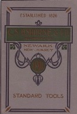
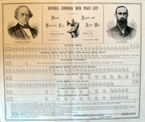
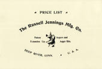
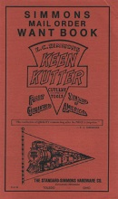

The Old Tool Reprint Room
Reprints: N-Standard
Some of the reprints listed here were re-created from damaged originals. Their covers and title pages may bear no relationship to the actual artifact. Others, especially those reprinted by Ken Roberts, have had additional pages of background information added to them. Conversely, some titles were not reproduced in their entirety in order to keep production costs down. The size of many reprints has no correlation to that of the original document.
National Saw Company
- Cover title: National Saw Company, Newark, N. J.
- Title page: Price List of the National Saw Co. Saws
- Newark, New Jersey : National Saw Company, 1895.
- Reprinted: Mid-West Tool Collectors Association, 2006.
- Reprint is paperbound, 192 pages, 17 x 25 cm.
- The National Saw Company marketed saws branded Richardson Brothers; Wheeler, Madden & Clemson Manufacturing Company; Harvey W. Peace and Woodrough & McParlin. All were once independent operations.
- Includes, one-man saws, two-man saws, circular saws, buck saws, hack saws, de-horning saws, butchers' saws, corn knives, cleavers, saw gummers, trowels, etc.
Nicholson File Company
- Cover title: A Treatise on Files: Nicholson File Co., Providence, R. I.
- Title page: A Treatise on Files and Rasps, Descriptive and Illustrated: for the Use of Master Mechanics, Dealers &c. in Which the Kinds of Files in Most Common Use, and the Newest and Most Approved Special Tools Connected Therewith, are Described—Giving Some of Their Principal Uses. With a Description of the Process of Manufacture and a Few Hints on the Use and Care of the File
- Providence, Rhode Island. : Nicholson File Company, 1878.
- Reprinted: Early American Industries Association, 1983.
- Reprint is hardbound, 79 pages, 22 x 28.5 cm.
- Title of guide is descriptive of its contents.
Norris & Son
- 1914
- A Selection of High-Class, London Made Metal Planes Fitted with Best Quality Rosewood and Ebony: Manufactured by T. Norris & Son
- London : T. Norris & Son, 1914.
- Reprinted in: Scottish and English Metal Planes Manufactured by Stewart Spiers and Manufactured by T. Norris & Son
- Also reprinted in: Norris Metal Planes
- 1928
- Cover title: Metal Planes
- Title page: A Selection of High-Class, London Made Metal Planes Fitted with Best Quality Rosewood and Ebony: Manufactured by T. Norris & Son
- London : T. Norris & Son, 1928.
- Reprinted in: Scottish and English Metal Planes Manufactured by Stewart Spiers and Manufactured by T. Norris & Son
- Also reprinted in: Norris Metal Planes
- Various dates
- Norris Metal Planes
- Reprinted: Mattawan, Michigan : Tom Witte, 1990.
- Reprinted: Lakeville, Minnesota : Astragal Press, 2002. (ISBN 978-1-931626-08-8)
- Tom Witte reprint: Paperbound, 34 pages, 13.5 x 21.5 cm.
- Astragal Press reprint: Paperbound, 38 pages, 13.5 x 21 cm.
- Contains facsimiles of 1914 and 1928 Norris catalogs.
- Tom Witte reprint: Includes 10 pages of additional content. (chiefly photographs).
- Astragal Press reprint: Includes 14 pages of additional content. (chiefly photographs, some colored)
- In addition to the Norris catalogs, includes the Norris section of the 1938 catalog of Buck & Ryan, a hardware house.
North Brothers Manufacturing Company
- 1909
- Cover title: "Yankee" Tool Book: North Bros. Mfg Co., Philadelphia
- Title page: "Yankee" Tool Book: Describing, with Illustrations, Some Up-To-Date Labor Saving Tools; More Especially, Ratchet Screw Drivers, Automatic or Push Drills, Breast and Hand Drills, etc., etc.
- Philadelphia, Pennsylvania : North Brothers Manufacturing Company, 1909.
- Reprinted: O. M. Ramsey and Philip Whitby, 1998.
- Reprint is paperbound, 44 pages, 15.5 x 16.5 cm.
- The catalog includes: plain, ratcheting, and spiral screwdrivers; push, hand and breast drills, etc.
- 1912
- Cover title: "Yankee" Tools, Ice Cream Freezers: 1912
- Title page: Catalogue of "Yankee" Tools, Ice Cream Freezers etc. etc.: Manufactured by North Brothers Mfg. Co.
- Philadelphia, Pennsylvania : North Brothers Manufacturing Company, 1912.
- Reprinted: Mid-West Tool Collectors Association, 1998.
- Reprint is paperbound, 117 pages, 15 x 23.5 cm.
- Reprint includes one-page chronology of North Brothers history.
- The catalog includes: plain, ratcheting and spiral screwdrivers; push, hand and breast drills; ice cream freezers; ice breakers, chippers and shaves; tobacco shaves and cutters, etc.
Norvell, Saunders
- Forty Years of Hardware
- 1st Edition
- New York : Hardware Age, 1924
- Reprinted: Mid-West Tool Collectors Association, 1992.
- Reprint is paperbound, 443 pages, 12.5 x 18 cm.
- A memoir of the St. Louis hardware trade by Saunders Norvell of the Norvell-Shapleigh Hardware Company. distributors of Diamond Edge tools. Prior to his presidency, Norvell was an executive with the Simmons Hardware Company, distributor of Keen Kutter tools.
Ohio Tool Company
- ca. 1900
- Ohio Adjustable Planes
- Charleston, West Virginia : Ohio Tool Company, ca. 1900.
- Reprinted: Fitzwilliam, New Hampshire : Ken Roberts Publishing, 1981. (ISBN 0-913602-47-7)
- Reprint is paperbound, 36 pages, 15.5 x 9 cm.
- Small booklet featuring metallic and transitional planes, draw knives, auger bits, chisels and screwdrivers.
- ca. 1910
- Cover title: Catalogue No. 23
- Title page: Illustrated Price List No. 23: Planes, Plane Irons, Chisels, Drawing Knives, Gouges, Auger Bits, Spoke Shaves, Cabinet Makers' and Manual Training Benches, Handles, Bench and Hand screws, Coopers' Tools, Wood and Edge Tools
- Columbus, Ohio : Ohio Tool Company, ca. 1910.
- Reprinted: Lancaster, Massachusetts : Roger K. Smith, 1976.
- Reprinted: Mid-West Tool Collectors Association, 1990.
- Reprint is paperbound, 84 pages, 14.5 x 22 cm.
- A catalog featuring wooden planes, metallic planes, chisels, gouges, augers, draw knives, hand screws, bench screws, etc.
Oldham, Joshua
- Cover title: Joshua Oldham catalog, 1887
- Title page: Catalogue and Price List: to Which is Appended a Treatise on Saws, their History, Manufacture, and Use
- New York : Joshua Oldham, 1887.
- Reprinted: South Burlington, Vt. : Early American Industries Association, 1976.
- Reprint is paperbound, 53 and xxxiii pages, 15 x 21 cm.
- Includes: Saws, their History, Manufacture, and Use: a Treatise
- Catalog includes hand saws, circular saws, band saws, machine knives, cane knives, etc.
Orr & Lockett Hardware Company
- 1898
- Cover title: Catalogue of Mechanics Tools: Orr & Lockett Hardware Co., Chicago, Ill., 1898
- Title page: Catalogue of Mechanics' Tools: Orr & Lockett Hardware Co., Dealers in Builders' and General Hardware, Cutlery and Tools, Butchers' Supplies, Contractors' Supplies, Stable Fittings
- Chicago, Illinois : Orr & Lockett Hardware Company, 1898.
- Reprinted: Berkeley, California : Robin Hood Publications, 1975.
- Reprint is paperbound, 208 pages, 21.4 x 28 cm.
- Catalog of a large Chicago-based hardware house featuring a line that included: Stanley and Chaplin's patent planes, wooden planes, Disston and Harvey Peace saws, Buck Brothers chisels and gouges, Cook's Stanley and Davis levels, foot-powered scroll saws, Barnes' machinery, Seneca Falls machinery, Starrett precision tools, etc.

- 1912 ca.
- Cover title: The Red Book Showing Manual Training: Benches and Tools
- Title page: The Red Book: Manual Training Orr & Lockett Co.; Benches and Tools
- Chicago, Illinois : Orr & Lockett Hardware Company, [1912?]
- Reprinted: Time Tested Tools, 2019. (ISBN 978-1096220305)
- Reprint is paperbound, 256 pages, 19 x 23.5 cm.
- The original title page of the volume was not reproduced.
- Tips and information for the shop teacher. Promotes Orr & Lockett's lineup of workbenches, Bailey planes, George E. Bishop saws, hammers, measuring tools, clamps, table saws and other machinery, blacksmith tools, drafting tools, treadle machines, and more.
Osborne — C. S. Osborne & Company

- Cover title: C. S. Osborne & Co., Incorporated, Newark, New Jersey: Standard Tools, 1911
- Title page: C. S. Osborne and Company: Standard Tool Manufacturers
- Newark, New Jersey : C. S. Osborne & Company, 1911.
- Reprinted: Early American Industries Association, Early Trades and Crafts Society, Mid-West Tool Collectors Association, 1976.
- Reprint is paperbound, 63 pages, 15 x 23 cm.
- Catalog includes such harness tools and leather working tools as round knives, revolving punches, pinking irons, draw gauges, awls, upholsterer's hammers, saddler's and cobbler's hammers. Also includes meat juice presses, solder pots, sloyd knives, cigar knives, pruning knives, etc. The catalog of James R. Hill & Company also featured an extensive line of C. S. Osborne Tools.
Owatonna Tool Company
- OTC: Our 50th Year, 1925-1975
- Owatonna, Minnesota : Owatonna Tool Company, 1925.
- Reprinted: Owatonna, Minnesota : Owatonna Tool Company, 1925.
- Reprint is paperbound, 25 pages, 11 x 18 cm.
- Catalogs includes automotive tools
- Peace — Harvey W. Peace Company
- See National Saw Company
Peck — A. G. Peck & Company
- Illustrated Catalogue of A. G. Peck & Co., Manufacturers of Axes and Edge Tools, Factory at Cohoes, New York, U.S.A.
- Cohoes, New York : A. G. Peck & Company, 1891.
- Reprinted: Fitzwilliam, New Hampshire: Ken Roberts Publishing Company, 1980. (ISBN 0-913602-39-6)
- Reprint is paperbound, 32 pages and 4 pages, 14 x 21.5 cm.
- Reprint includes four-page price list of Ten Eyck Manufacturing Company, 1870.
- Catalog includes axes, hatchets, adzes, picks and mattocks.
Peck Stow & Wilcox Company
- 1899
- Cover title: The Peck Stowe and Wilcox Company's Tinsmiths' Tools and Machines of the Highest Grade and Best Quality
- Title page: Tinsmiths' Tools and Machines of the Highest Grade of Excellence Manufactured by the Peck Stowe Wilcox Co.
- 2nd Centennial edition
- New York : Peck Stowe & Wilcox Company, 1899.
- Reprinted: , New Jersey : Astragal Press, 1993. (ISBN 1-879335-38-7)
- Reprint is paperbound, 150 pages, 15.5 x 23.5 cm.
- Catalog includes hammers, screwdrivers, shears, beading machines, seaming machines, tin folding machines, brakes, snips, tinner's stakes, etc.
{kind=link}
- 1910
- Cover title: P. S. & W. Mechanics' Handy List
- Title page: Mechanics' Hand Tools with Reference Tables and Valuable Shop Information
- Second edition
- New York : Peck Stowe & Wilcox Company, 1910.
- Reprinted: Mid-West Tool Collectors Association, 2018.
- Reprint is paperbound, 165 pages, 11.5 x 17.5 cm.
- Catalog includes auger bits, chisels, gouges, braces, hammers, hatchets, squares, draw knives, screwdrivers, pliers, tinsmith's tools, etc.
{kind=link}
- 1927
- Cover title: Mechanics Hand Tools
- Title page: Mechanics' Hand Tools for Carpenters, Machinists, Electricians, Tinsmiths, etc.: Catalog No. 26T
- Southington, Connecticut : Peck Stowe & Wilcox Company, 1927.
- Reprinted: Lancaster, Massachusetts : North Village Publishing Company (i.e. Roger K. Smith), 1981. (ISBN 0-940458-02-0)
- Reprint is paperbound, 94 pages, 13 x 18 cm.
- Catalog includes auger bits, chisels, gouges, braces, hammers, hatchets, squares, draw knives, screwdrivers, pliers, tinsmith's tools, etc.
Phelps Manufacturing Company
- Patternmaker's Tools: Catalogue No. 28
- Oakland, California : Phelps Manufacturing Company, ca. 1941
- Reprinted: PAST (Preserving Arts and Skills of the Trades), 1991.
- Reprint is paperbound, 24 pages, 9 x 16 cm.
- A catalog of patternmaker's planes, spoke shaves, routers, gauges, etc.
Pike Manufacturing Company
- Cover title: How to Sharpen and What to Use: an Aid to Users of Pike Sharpening Stones
- Title page: How to Sharpen and What to Use: a Book for the Mechanic, the Farmer, the Handyman, and the Housewife
- Pike, New Hampshire : Pike Manufacturing Company, 1913.
- Reprinted: Southwest Tool Collectors Association, 1982.
- Reprint is paperbound, 47 pages, 8 x 15.5 cm.
- Includes 22 pages of sharpening tips.
- Includes 2 pages care of for oil and water stones.
- The remainder of the booklet is a catalog featuring a variety of sharpening stones and slips. Also includes sharpening oil, knife sharpeners, grinding wheels and scythe stones.
Pomeroy, A. H.
- Illustrated Catalogue of Scroll Saws, Lathes, Fancy Woods, Clock Movements, Pocket Cutlery, Mechanics' Tools, &c., &c
- Hartford, Connecticut : A. H. Pomeroy, 1886.
- Reprinted: Harwich, Connecticut : William C . Cavallini, 1974?
- Reprint is paperbound, 34 pages, 15 x 23 cm.
- Catalog of a hardware house selling scroll saws, foot powered lathes, pocket knives, hammers, braces, planes, etc.
Preston — Edward Preston & Sons
- 1901
- Illustrated Price List of Rules, Spirit Levels, Planes and Tools &c.: Manufactured by Edward Preston & Sons, Ltd.
- Sixth edition
- Birmingham, England : Edward Preston & Sons, 1901.
- Reprinted: Fitzwilliam, New Hampshire : Ken Roberts Publishing, 1979. (ISBN 0-9130602-30-2)
- Reprint is paperbound, xxvi and 167 pages, 21.5 x 28 cm.
- Reprint includes all of original catalog plus 23 pages of additional content.
- Roberts' reprint was distributed with a small Preston centenary pamphlet.
- "All material appearing in the original is included within this Reprint, but may be in slightly different order."
- Catalog features an extensive line of carpentry and woodworking tools.
- 1909
- Cover title: The "Preston Catalogue: Rules, Levels, Planes, Braces and Hammers, Thermometers, Saws, Mechanic's Tools, &c.; Catalogue No. 18, May 1909
- Title page: Illustrated Catalogue of Rules, Levels, Plumbs & Levels, Thermometers, Planes, Improved Woodworkers' and Mechanics' Tools &c.: Manufactured by Edward Preston & Sons, Ltd.
- Birmingham, England : Edward Preston & Sons, 1909.
- Reprinted: Mendham, New Jersey : Astragal Press, 1991. (ISBN 0-9618088-9-6)
- Reprint is paperbound, xxvi and 167 pages, 21.5 x 28 cm.
- Reprint includes 42 pages of additional content not found in the original publication.
- Reprint includes catalog supplement dated 1912 and a history of the company by Mark Rees.
- Catalog features an extensive line of carpentry and woodworking tools.
- 1925
- Centenary of Edward Preston & Sons Limited: 1825-1925
- Birmingham, England : Edward Preston & Sons, 1925.
- Reprinted: Fitzwilliam, New Hampshire : Ken Roberts Publishing, 1979.
- Pamphlet, 12 pages including covers, 10 x 14 cm.
- Distributed by Ken Roberts with his reprint of the 1901 Preston & Sons catalog.
- Small celebratory booklet with chronology of the company's history.
Rabone — John Rabone & Son
{kind=link}
- ca. 1867
- Instructions on the Use of the Practical Engineers' & Mechanics' Improved Slide Rule: as Arranged by J. Routledge, Engineer
- Birmingham, England : John Rabone & Son, ca. 1867.
- Reprinted: Fitzwilliam, New Hampshire: Ken Roberts Publishing Company, 1983. (ISBN 0-913602-57-4)
- Latest edition, with alterations and corrections.
- Size of original publication: 10 cm x 16.5 cm.
- Reprint is paperbound, 32 pages, 14 x 21.5 cm.
- Reprint includes two pages of historical notes by Ken Roberts on inside covers.
- An instructional book.
- Information courtesy of Chuck Guilford.
- 1880
- The Carpenter's Slide Rule: Its History and Use, Containing Instructions for All Kinds of Boards and Planks, Timber in the Round or Square, Glazier's Work and Painting, Brickwork, Paviours' Work ...
- 3rd edition
- Birmingham, England : John Rabone & Son, 1880.
- Reprinted: Fitzwilliam, New Hampshire: Ken Roberts Publishing Company, 1982. (ISBN 0-913602-50-7)
- Original size: 10 x 15.5 cm.
- Reprint is paperbound, 32 pages, 22 cm.
- Reprint includes two pages of historical notes by Ken Roberts.
- An instructional book.
- 1892
- Cover title: John Rabone & Sons Hockley Abbey Works, Birmingham, England: Rules, Tapes, Steel Straight Edges, Steel Band Chains, Spirit Levels, etc.
- Title page: Catalogue of Measuring Rules, Tapes, Steel Straight Edges, Steel Band Chains, Spirit Levels, &c.: Manufactured by John Rabone & Sons Hockley Abbey Works, Birmingham
- Birmingham, England : John Rabone & Son, 1892.
- Reprinted: Fitzwilliam, New Hampshire: Ken Roberts Publishing Company, 1982. (ISBN 0-913602-49-3)
- Reprint is paperbound, 94 pages, 30.5 cm.
- Reprint includes Ken Roberts' article on rulemaking in Birmingham, an 1866 John Rabone, Jr., article on rulemaking, facsimiles of advertisements and labels.
- Includes rules, tapes, levels, gauges.
Rayl — T. B. Rayl Company
- ca. 1888
- T. B. Rayl & Co. Wood-Workers' Tools: Detroit Tool Depot
- Detroit, Michigan : T. B. Rayl & Company, ca. 1888
- Reprinted: Early American Industries Association, 1973.
- Reprint is paperbound, 144 pages, 14 x 21.5 cm.
- Reproduced from original lacking cover—cover is a reconstruction
- Catalog of a Detroit hardware house featuring saws, saw vises, saw sets, wooden and metallic planes, spoke shaves, draw knives, chisels, gouges, carving tools, boring machines, Backus and other braces, auger bits, countersinks, rules, try squares, hollow augers, axes, clamps, etc.
- ca. 1905
- Rayl's, Detroit, Michigan: Wood-Workers' Tools, Catalog No. 21
- Detroit, Michigan : T. B. Rayl Company, ca. 1905.
- Reprinted: Lancaster, Massachusetts : Roger K. Smith, 1976.
- Reprint is paperbound, 290 pages, 15 x 22.5 cm.
- A catalog of a Detroit hardware house with a massive line of woodworking tools, including: blow torches, Barnes machinery, drafting tools, wrenches, pliers, glue pots, vises, benches, grinding stones, sharpening stones, precision tools trammels, plumbs, Stanley and Davis levels, rules, wooden and metallic planes, razors and strops, files, carving tools, chisels, gouges, wood and metal cutting saws, squares, bits, braces, hand and breast drills, etc.
Record Works
- Cover title: Record Tools: Catalogue No. 15
- Title page: Record Tools: a Reprint of Catalogue No. 15 of 1938 with a Guide for Plane Collectors
- Internal title page: Record Tools: Catalogue No. 15
- Sheffield, England : C. & J. Hampton, Ltd., 1938.
- Reprinted: Needham Market, Suffolk, England : Roy Arnold, 2003. (ISBN 0-904638-14-6).
- Reprint is paperbound, 159 pages, 21.5 x 28 cm.
- Includes a 13 page guide for Record plane collectors by Leslie Harrison.
- Catalog includes planes, spokeshaves, vises, wrenches, pipe cutters, bolt cutters and clamps.
- Richardson Brothers
- See National Saw Company
Richardson, M. T.
{kind=link}
- Practical Carriage Building ...
- New York : M. T. Richardson & Company, 1892.
- Reprinted: Scarsdale, New York : Early American Industries Association, 1981.
- Reprint (two volumes in one) is hardbound with sequences of 222 pages and 280 pages, 15 x 23 cm.
- In 1892, M. T. Richardson published a two-volume compendium of articles on the practical aspects of carriage building. Although the work contains some examples of conflicting advice, the publisher considered the variety of viewpoints expressed by the work's contributors to be one of the strengths of this effort.
- Included are plans for carriage-making facilities, descriptions of necessary tools and appliances, tips on repairing wheels, instructions on the making of yokes and whiffletrees, instructions on laying out spokes, an explanation of the construction of sleighs, and much, much more.
- The Early American Industries Association combined the two original volumes into one in order to make this reprint economically viable.
Rose, Joshua
{kind=link}
- The Pattern Maker's Assistant: Including the Preparation and Use of Tools; Lathe, Core, Branch, and Sweep Work; and Practical Gear Construction
- 6th edition
- New York : Van Nostrand, 1889.
- Reprinted: Mendham, N. J. : Astragal Press in cooperation with the Early American Industries Association, 1995. (ISBN 1-879335-59-X)
- Reprint is paperbound, 249 pages, 15 x 23 cm.
- "Joshua Rose explains the various types of patterns, how they are constructed and the tools that are used. Subjects include lathe work, branch work, core work, sweep work, gear construction, pulleys, cog teeth, valves, square and round columns, and much more ... " — from back cover.
Roys & Wilcox
- Roys and Wilcox, Mattabesett Works, East Berlin, Conn.: Manufacturers of Tinmen's Tools and Machines.
- East Berlin, Connecticut : Roys & Wilcox, 1852.
- Reprinted for the Early American Industries Association, 1975.
- Broadside, 43 x 28 cm.
- A broadside listing prices for such tinsmith's tools as shears, hammers, stakes, riveters, punches, riveters, etc.
- item not seen
Russell & Tremain Company
- Russell's Screw Power Mower and Reaper, Combined.
- Manlius, New York : Russell & Tremain, ca. 1862.
- Reprinted: Levittown, New York : Early Trades and Crafts Society, 1978?
- Reprint is paperbound, 6 pages, 21.5 x 28 cm.
- A circular extolling the virtues of the partners' combined reaper and mower.
- Information courtesy of Kendall Bassett.
Russell Jennings Manufacturing Company

- 1884
- Russell Jennings' New Price list of Patent Augers and Extension Lip, Auger Bits: Revised and issued January, 1884
- Deep River, Connecticut: Russell Jennings Manufacturing Company, 1884
- Reprinted: Early American Industries Association, 1979.
- Distributed to subscribers of the Chronicle of the Early American Industries Association.
- Broadside, 30.5 x 25.5 cm.
- Includes portraits of Russell and S. H. Jennings as well as prices for auger bits, dowel bits, boat bits, hand rail bits, machine bits, boring machine bits, car bits, carpenters, augers, millwrights' augers, and machine dowels.

- ca 1899
- Price list: The Russell Jennings Mfg. Co., Deep River, Conn., U.S.A.
- Chester, Connecticut: Russell Jennings Manufacturing Company, ca. 1899
- Reprinted: Fitzwilliam, Massachusetts : Ken Roberts Publishing, 1981.
- Reprinted: Mendham, New Jersey : Astragal Press (ISBN 978-1-879335-18-9)
- Reprint is paperbound, 32 pages, 28 x 34.5 cm.
- Includes 11 pages of supplementary historical material compiled by Kenneth D. Roberts: forward, historical information, photos of tools and factories, 1881 price list and text of patent.
- Catalog features company's auger bits.
- 1907
- The Russell Jennings Manufacturing Co.: Manufacturers of Patent Extension Lip Augers and Auger Bits.
- New York: American Suburb Company, 1907.
- Reprinted: Fitzwilliam, Massachusetts : Ken Roberts Publishing, [1981?]
- Poster, 26.5 x 17.5 cm.
- Side one consists of a reprinted article from American Suburbs Illustrative that is reduced in size from the original magazine (88%).
- Side two is a reprint of an unidentified, undated newspaper advertisement.
- May have been shipped with the Roberts' reprint of the ca. 1899 Russell Jennings price list.
Sandusky Tool Company
- 1877
- Illustrated List of Planes, Plane Irons, Coopers' and Cabinet Makers' Tools, Axes, Picks, Mattocks, Sledges, Hoes, Stone Masons' and Miners' Tools, Hand and Bench Screws, All Kinds of Handles, Mallets, Screw Drivers, Saw Bucks, &c., &c. Manufactured by the Sandusky Tool Company, Sandusky Ohio
- Sandusky, Ohio : Sandusky Tool Company, 1877.
- Reprinted: Fitzwilliam, New Hampshire : Ken Roberts Publishing Company, 1978. (ISBN 0-913602-24-8)
- Reprinted: Mendham, New Jersey : Astragal Press, ca. 1991. (ISBN 1-879335-19-0)
- Reprint is paperbound, 66 pages, 14 x 21.5 cm.
- Catalog includes wooden planes, Morris Patent planes, hand and bench screws, handles, mallets, screwdrivers, etc.

- 1925
- Cover title: Catalog No. 25, September 1st, 1925
- Other: Manufacturers of Metal and Wood Planes; Plane Irons; Eye, Shank, and Gooseneck Hoes;: All-Wood and Steel-Spindle Hand Screws; Wood and Iron Bench Screws; Coopers Wood Tools; Wooden Mallets and Handles
- Sandusky, Ohio : Sandusky Tool Company, 1925.
- Reprinted: Fitzwilliam, New Hampshire : Ken Roberts Publishing Company, 1978. (ISBN 0-913602-23-X)
- Reprinted: Mendham, New Jersey : Astragal Press, 1991? (ISBN 978-1-879335-26-4)
- Reprints are paperbound, 72 pages, 14 x 21.5 cm.
- Catalog includes wooden planes, metallic planes, coopers tools, mallets, bench screws, garden hoes, chisel handles, etc.
Sargent & Company
{kind=link}
- 1887
- Sargent & Co.'s Improved Adjustable Iron Planes
- [New Haven, Connecticut] : Sargent & Company, [1887].
- Reprinted: Charleston, Illinois: David E. Heckel, 2000.
- Reprint is 4 pages, 14 x 21 cm.
- Issued in 1887 as a supplement to the company's 1884 catalog. Introduces the companies new line of hand planes, included seven sizes of bench planes and seventeen models of block planes.
- 1894
- [tool section of of Sargent & Company's 1894 catalog]
- Reprinted in: The Sargent Tool Catalog Collection
- 1910
- [tool section of of Sargent & Company's 1910 catalog]
- Reprinted in: The Sargent Tool Catalog Collection
- 1911
- Cover title: Sargent Tool Book
- Title page: Mechanics Tools: 1911
- New Haven, Connecticut : Sargent & Company, 1911.
- Reprinted: Mid-West Tool Collectors Association, 1995.
- Reprint is paperbound, 250 pages, 15 x 20 cm.
- Catalog includes hand planes, chisels, gouges, augers, bits, bevels, vises, screwdrivers, axes, hammers, squares, saws, etc.
{kind=link}
- 1913
- Cover title: Sargent VBM Wood Bottom and Iron Planes for First Class Mechanics
- Title page: Sargent VBM Mechanics Tools, 1913
- Additional title page: Carpenters' Tools
- New Haven, Connecticut : Sargent & Company, 1913.
- Reprinted: Time Tested Tools, 2018.
- Reprint is paperbound, 32 pages, 18 x 25.5 cm.
- A confusing reprint with three title pages. The contents may be a subset of re-numbered pages from the general line catalog.
- Catalog features transitional and metallic hand planes, scrapers, and non-adjustable steel squares.
- 1922
- [tool section of of Sargent & Company's 1922 catalog]
- Reprinted in: The Sargent Tool Catalog Collection
- 1925
- Cover title: Sargent Planes
- Title page: Wood Bottom and Iron Planes: Sargent
- New Haven, Connecticut : Sargent & Company, 1925.
- Reprinted: Roger K Smith, 1975.
- Reprint is paperbound, 56 pages, 11 x 17 cm.
- Catalog features transitional and metallic hand planes and scrapers.

- Cover title: Sargent Planes
- Caption: Wood Bottom and Iron Planes
- [New Haven, Connecticut : Sargent & Company, 1925.]
- Reprinted: Charleston, Illinois : David E. Heckel, 2000.
- Single sheet folded to 9 x 15 cm.
- Content is more restrictive than the caption indicates, features only Sargent Auto-Set planes.
{kind=link}
- 1943
- Sargent Combination Planes Nos. 1080 and 1085: Description and Directions for Using
- New Haven, Connecticut : Sargent & Company, 1925.
- Reprinted: Charleston, Illinois : David E. Heckel, 2000.
- Reprint is paperbound, 20 pages, 13 x 2015 cm.
- Instructions for the use of the Sargent combination planes.
{kind=link}
- various dates
- Sargent Planes
- Charleston, Illinois : David E. Heckel, 2000.
- Paperbound, 8 unnumbered pages, 14 x 20 cm.
- A compendium of Sargent advertisements compiled by Dave Heckel.
- Includes 1916 advertisement: The Satisfaction of Owning a Sargent plane.
- Includes ca. 1923 advertisement: Sargent Planes: Built for Master Carpenters ... Best for Home Workshops.
- Includes ca. 1923 advertisement: This Plane Always Makes Shavings--Even Across the Grain!
- Includes 1923 advertisement: The Cutter of Chromium Steels Holds Its Edge.
- Includes 1927 advertisement: A Plane That Measures Up to Your Best Workmanship.
- Includes 1927 advertisement: Here's How the Sargent Auto-Set Plane Is Built.
- Includes 1927 advertisement: This Plane Always Makes Savings--Even Across the Grain!
- various dates
- The Sargent Tool Catalog Collection
- Mendham, New Jersey : Astragal Press, 1993. (ISBN 1-879335-42-5)
- Paperbound, 176 pages, 26 cm.
- Includes forward by Paul Weidenschilling.
- Includes the tool section of the 1894 Sargent & Company catalog.
- Includes the tool section of the 1910 Sargent & Company catalog.
- Includes the tool section of the 1922 Sargent & Company catalog.
Sawyer Tool Manufacturing Company
- Cover title: Sawyer Tool Manufacturing Co., Fitchburg, Mass, U.S.A.: Fine Tools
- Title page: Illustrated Price List of Fine Tools and Hardware Specialties Manufactured by the Sawyer Tool Mfg. Co. (Incorporated): Catalog G
- Fitchburg, Mass: Sawyer Tool Manufacturing Company, 1904.
- Reprinted: Bath, New York : Martin J. Donnelly Antique Tools, ca. 1993.
- Reprint is paperbound, 54 pages, 9.5 x 14 cm.
- Catalog includes machinist's tools, rules, gauges, micrometers, levels, squares, trammels, etc.
Sears, Roebuck and Company
- Tools, Machinery, Blacksmiths' Supplies
- Chicago, Illinois : Sears Roebuck and Company, ca. 1910.
- Reprinted: Mid-West Tool Collectors Association, 1984.
- Reprint is paperbound, 148 pages, 21.5 x 28 cm.
- A list of blacksmith's tools far more comprehensive than might be imagined. Includes: screw cutting lathes, pulleys belting, cross-cutting table saws, rip saws, band saws, forges, vises, post drills, planes, levels, hammers, wrenches, horseshoes, wheels, buggy parts, anvils, axes, squares, calipers, ropes, post drills, etc.,
Shannon, J. B.
- Illustrated Catalogue and Price List of Carpenters' Tools: Catalogue No. 7, August 1873
- Philadelphia : J. B. Shannon, 1873.
- Reprinted: West Harwich, Massachusetts: William C. Cavallini, 1972.
- Reprint is paperbound, 107 pages, 14 x 20.5 cm.
- Includes a 4-page guide to prices of antique tools compiled by Cavallini.
- Catalog of a Philadelphia hardware house featuring handsaws, wooden planes, Bailey and Palmer & Storke metallic panes, gouges, chisels, augers, bits, rules, gauges, tapes, wrenches, draw knives, clamps, etc.
- Reprint also published with yellow cover and red lettering.
Shapleigh Hardware Company
{kind=link}
- Diamond Edge Planes
- St. Louis, Missouri : Shapleigh Hardware Company, 1927
- Reprinted by Philip J. Whitby, 1992.
- Reprint is paperbound, 15 pages, reprint, 11 x 17.5 cm.
- An illustrated price list of metallic planes
Shipman — A. H. Shipman Bracket Saw Company
- The Amateur Mechanic's Manual and Catalogue of Scroll Saws & Lathes Manufactured by A. H. Shipman
- New York: A. H. Shipman Bracket Saw Company, 1881.
- Reprinted: Early American Industries Association, 2002.
- Reprint is paperbound, 32 pages, 15 x 23 cm.
- Includes extremely brief introductions to fret sawing, lathe work and wood carving
- Reprint includes a 3-page history of the company by Frank Kosmerl.
- Catalog includes scroll saws, foot powered lathes, accessories etc.
Simmons Hardware Company

- ca. 1912
- Standard-Simmons Hardware Company
- Simmons Mail Order Want Book: E. C. Simmons Keen Kutter Cutlery and Tools
- Toledo, Ohio: Standard-Simmons Hardware Company, ca. 1912.
- Reprinted: Royal Oak, Michigan : R. L. Deckebach, 1989.
- Reprint is paperbound, 60 pages, 15 x 25 cm.
- An order book for Simmons hardware dealers that features electrotypes for laying out ads, Keen Kutter price tags, circulars, booklets, signs, posters, ideas for window displays, promotions etc.
- 1915
- Simmons Hardware Company
- Cover title: Sectional Views of Simmons Hardware Company's Exhibit at the Panama-Pacific International Exposition: Manufacturers' Palace, San Francisco, 1915
- Title page: Simons Hardware Company's Exhibit at the Panama-Pacific International Exposition: Manufacturers' Palace, San Francisco, 1915
- [Saint Louis, Missouri] : Simmons Hardware Company, 1915.
- Reprinted: San Francisco, California, Dave Paling, 1993.
- Reprint is paperbound, 40 pages, 10.5 x 17.5 cm.
- Contains drawings of the company's display at the exposition. The display was constructed out of 10,000 pieces of hardware and 2,000 feet of chain..
- 1930
- E. C. Simmons Hardware Company
- Cover title: E. C. Simmons Keen Kutter Cutlery and Tools (M-WTCA printing)
- Cover title: Hardware Catalog: E. C. Simmons Keen Kutter Cutlery and Tools (Roger K. Smith printing)
- Title page: The Mark: E. C. Simmons Keen Kutter Cutlery and Tools and the Motto: "The Recollection of Quality Remains Long After the Price is Forgotten"
- St. Louis, Missouri : Simmons Hardware Company, 1930.
- Reprinted: Mid-West Tool Collectors Association, 1984. (orange and yellow cover)
- Reprinted: Lancaster, Massachusetts : Roger K. Smith, 1984 (orange and violet cover)
- Reprints are paperbound, 242 pages, 21 x 27.5 cm.
- Identical except for the covers, these reprints include the complete tool section of a catalog that originally contained over 2,000 pages.
- Cover of the Smith reprint bears the designation: Catalog No. U
- 1930
- E. C. Simmons Keen Kutter Cutlery and Tools
- St. Louis, Missouri : Simmons Hardware Company, 1930.
- Reprinted: St. Louis, Missouri : American Reprints, 1971.
- Reprint is paperbound, 56 pages, 15 x 23 cm.
- Reprints the pocket knives pages of Catalog No. U—a volume containing over 2,000 pages.
Simonds Manufacturing Company
- 1910
- Price List, Simonds Mfg. Co.: Makers of Saws, Machine Knives, Crucible Flat Steel, Files and Hack Saws, January 1910
- Fitchburg, Massachusetts : Simonds Manufacturing Company, 1910.
- Handsaw section of this catalog is reprinted in: The Handsaw Catalog Collection (Astragal Press)
- 1914
- Simonds Guide for Carpenters: a Book of Useful Rules and Illustrations Gathered from Different Sources.
- "Entirely revised."
- Fitchburg, Massachusetts : Simonds Manufacturing Company, 1914.
- This booklet is reprinted in: The Simonds Mfg. Co. Publications Reprinted
- 1916
- How to File A Hand Saw
- Fitchburg, Massachusetts : Simonds Manufacturing Company, 1916.
- This booklet is reprinted in: The Simonds Mfg. Co. Publications Reprinted
- 1919
- Cover title: The Simonds Saws & Knives, 1919
- Title page: Catalogue No. 19
- Fitchburg, Massachusetts : Simonds Manufacturing Company, 1919.
- Reprinted: Athol, Massachusetts : Roger K. Smith, 1994.
- Reprint is paperbound, 195 pages, 15 x 22.5 cm.
- Catalog includes catalogs, saws, saw blades, files, saw sets, swages, saw jointers, speed indicators, cane knives, machine knives, etc.
Smith — H. D. Smith & Company
- Cover title: The H. D. Smith & Co's Drop Forged Tools: No. 25
- Title page: The H. D Smith & Co., Plantsville, Conn. U.S.A.: Makers of Drop Forged Fine Tools
- Plantsville, Connecticut: H. D. Smith & Company, 1920.
- Reprinted: Athol, Massachusetts : Roger K. Smith, 1994.
- Reprint is paperbound, 36 pages, 15.5 x 20 cm.
- Catalog includes perfect handle screw drivers, hammers, wrenches and draw knives, pincers, etc.
Smith, Joseph
- Cover title: Explanation or Key, to the Various Manufactories of Sheffield
- Title page: Explanation or Key, to the Various Manufactories of Sheffield, with Engravings of Each Article
- Sheffield, England : J. Smith, 1816
- Reprinted: South Burlington, Vermont: Early American Industries Association, 1975.
- Reprint available either hard paperbound, 21 pages, 71 leaves of plates, 22 x 28.5 cm.
- Reprint includes an introduction by John S. Kebabian and 17 pages of ancillary material not found in the original.
- A pictorial record of the various tools manufactured in Sheffield in 1816. Includes edge tools, cutlery, dental and surgical tools. The actual use to which the key was put remains a mystery.
Smith, Otis A.
- Otis A. Smith, Manufacturer of Firearms and Hardware Specialties, Rockfall, Conn.: 1905 Trade Catalog
- Rock Fall, Connecticut : Otis A. Smith, 1905.
- Reprinted: Lancaster, Massachusetts : Roger K. Smith, 1984
- Reprint is paperbound, 27 pages, 16.5 x 9 cm.
- Reprint includes one-page historical note.
- Catalog lists Fales patent combination plane, a marking gauge, clapboard marker, washer cutter, hand vise, other miscellaneous tools and and Smith's line of single-action and double-action revolvers.
Southington Hardware Company
{kind=link}
- Cover title: Southington Hardware Company 1930 Trade Catalog
- Title page: Southington Hardware Company, Southington, Conn., U.S.A.: Manufacturers of Standard Cut Thread Woodscrews, Steel Squares, Try Squares and Bevels, Mechanics' Tools, Home Furnishings: Catalogue No. 30, March 1, 1930
- Southington, Connecticut : Southington Hardware Company, 1930.
- Reprinted: Wilmington, North Carolina : Toolemera Press, 2016. (ISBN 978-1530045204)
- Reprint is paperbound, 49 pages, 16.5 x 9 cm.
- Includes squares, bevels, screwdrivers, awls, gardening tools, etc.
- Includes views of plant 1867 and 1930
Spear & Jackson, Ltd.
- Price List Issued by Spear & Jackson, Ltd., Aetna Works, Savile Street East, Sheffield, England.
- 12th edition
- Sheffield, England : Spear & Jackson, Ltd., 1905.
- Handsaw section of this catalog is reprinted in: The Handsaw Catalog Collection (Astragal Press)
Spiers, Stewart
- 1909
- Catalogue of Wrought Iron, Steel and Gunmetal Planes: Manufactured by Stewart Spiers, Iron Plane Maker
- Ayr, Scotland : Stewart Spiers, 1909.
- Reprinted in: Scottish and English Metal Planes Manufactured by Stewart Spiers and Manufactured by T. Norris & Son
- 1930
- Cover title: Spiers Planes
- Title page: Mild Steel, Malleable Iron, Gunmetal, Iron Planes: Manufactured by Stewart Spiers, Iron Plane Maker
- Paisley and Ayr, Scotland ; Stewart Spiers, ca. 1930.
- Reprinted in: Scottish and English Metal Planes Manufactured by Stewart Spiers and Manufactured by T. Norris & Son
- various dates
- Scottish and English Metal Planes Manufactured by Spiers/Norris
- Fitzwilliam, New Hampshire : Ken Roberts Publishing, 1979. (ISBN 0-913602-31-0)
- Reprint is paperbound, 72 pages, 14 x 21.5
- Contains facsimiles of Spiers and Norris price lists.
- Contains 33 pages of non-catalog information compiled by Kenneth D. Roberts.
- not seen
- various dates
- Scottish and English Metal Planes Manufactured by Stewart Spiers and Manufactured by T. Norris & Son
- 2nd revised and enlarged edition.
- Fitzwilliam, New Hampshire : Ken Roberts Publishing, 1991. (ISBN 0-93602-69-8)
- Paperbound, 101 pages, 14 x 21.5
- Contains facsimiles of Spiers and Norris price lists.
- Contains facsimile of Norris section of 1938 Buck and Ryan catalog.
- Also includes a number of additions by Ken Roberts including: a four-page history of the Stewart Spiers operation, a photo of the Spiers factory, 13 pages of photographed Spiers planes, four pages of miniature replicas of Spiers planes manufactured by Bob Baker, and 2-page essay on making Spiers miniatures by Bob Baker.
- Also includes a four-page introduction to the Thomas Norris & Son by Ken Roberts 16 additional pages of miscellaneous information.
Standard Rule Company
- The Standard Iron and Wood Planes Manufactured by the Standard Rule Co.: Manufacturers of Boxwood and Ivory Rules, Try Squares and T Bevels, Plumbs and Levels, Iron Planes, etc.
- Unionville, Conn : Standard Rule Company, ca. 1885.
- Reprinted: Ken Roberts Publishing. Company, 1980?
- Single sheet folded to 8.5 x 15.5 cm.
- Price list of metallic planes and transitional planes
Standard Tool Company
{kind=link}
- 1885
- Price list of Chaplin's Patent Try Square and Other Tools Manufactured by Standard tool company, Athol, Mass.
- Athol, Mass : Standard Tool Company, ca. 1885.
- Reprinted: [Place of publication and reprinter not identified, ca. 1990].
- Single sheet folded to 8.5 x 15 cm.
- Features Orril R. Chaplin's try & center square.
- Includes machinist's try and centering squares, caliper gauges, pliers, a surface gauge and steel rules.
- 1899
- Standard Tool Co.: Manufacturers of Mechanics' Fine Tools, Athol, Mass. U.S.A.
- Athol, Mass : Standard Tool Company, ca. 1899.
- Reprinted: Bath: New York: Martin J. Donnelly Antique Tools
- Reprint is paperbound, 90 unnumbered pages, 11 x 19 cm.
- Catalog includes such machinist's tools as calipers, gauges squares, levels, Athol Machine Company vises, etc.